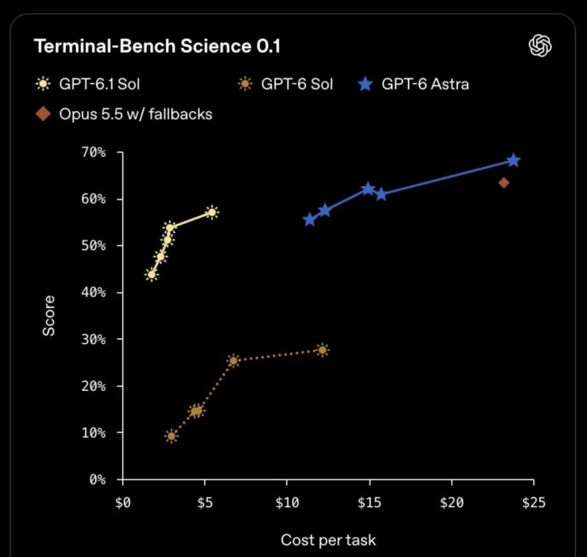
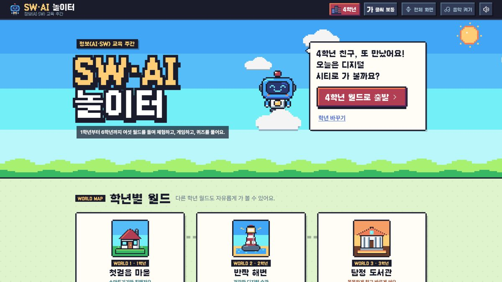
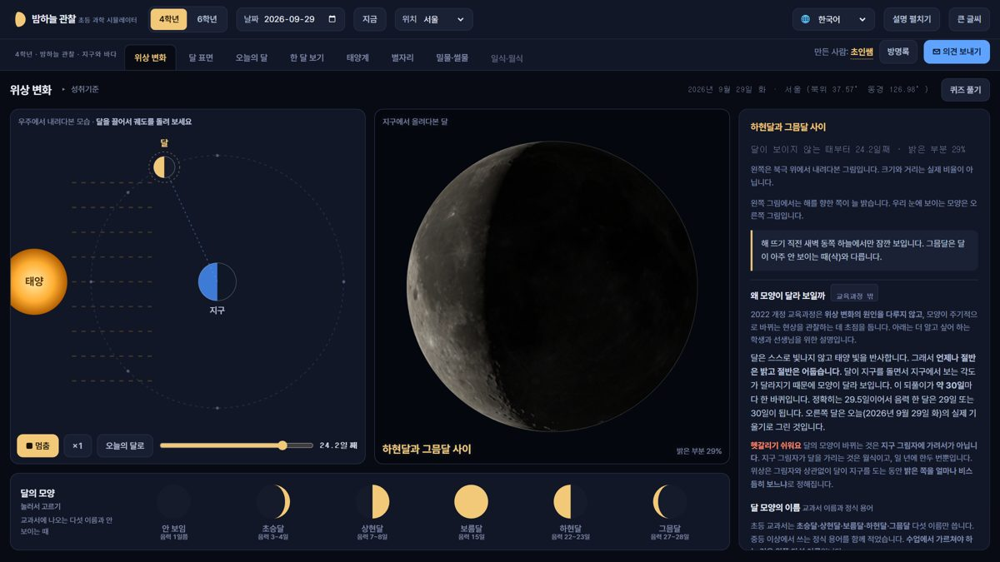
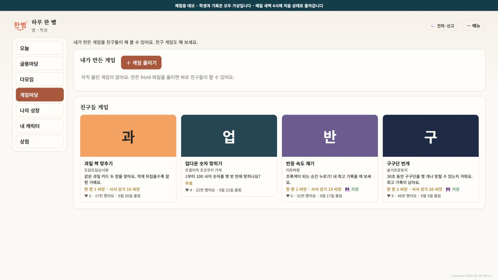
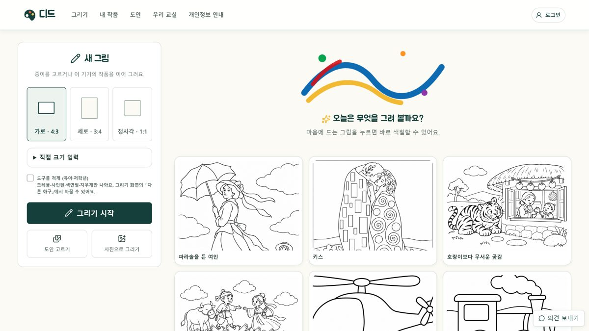

에이전트로 만들어보는
우리 반 맞춤 수업 도구
ChatGPT 데스크톱 앱의 Codex로 정보수업 도구를 직접 만들고 서로 써 봅니다. 연수 중에도, 끝난 뒤에도 이 페이지를 보시면 됩니다. 화면은 찍지 않으셔도 됩니다.
00오늘의 흐름
| 시간 | 분 | 구성 | 하는 것 |
|---|---|---|---|
| 14:00 | 10 | 여는 시간 · 강사 소개 | 이 페이지 열기 |
| 14:10 | 20 | 01 ChatGPT란 · 02 어떻게 잘 활용할까 | |
| 14:30 | 30 | 03 에이전트와 작업 환경 | 앱 켜고 작업 폴더 열기 |
| 15:00 | 10 | 쉬는 시간 | |
| 15:10 | 35 | 04 무엇을 만들까 · 05 어떻게 만들까 · /goal | 불편한 것 한 줄 |
| 15:45 | 15 | 06 정보수업 · 도구 체험 | 아이디어 메모 |
| 16:00 | 70 | 실습 · 정보수업 도구 만들기 | 도구 한 파일 |
| 17:10 | 30 | 발표와 나눔 | 둘러보기 · 발표 |
| 17:40 | 20 | 07 학생에게 쓰기 전에 · 마무리 |
오늘 가져갈 것
AI를 교실에 어떻게 활용할까?
AI와 제대로 협업할 수 있는 환경이란?
내일 당장 써먹을 수 있는 웹 앱 만들기
01ChatGPT란?
GPT는 Generative Pre-trained Transformer의 약자입니다.
| 글자 | 뜻 |
|---|---|
| Generative | 생성한다. 검색해 찾아오지 않고 새로 만들어 냅니다. |
| Pre-trained | 미리 학습했다. 방대한 자료를 먼저 배운 상태로 대화를 시작합니다. 그래서 학습 뒤의 새 정보는 모를 수 있습니다. |
| Transformer | 구조의 이름. 2017년 구글 논문 「Attention Is All You Need」에서 나온 딥러닝 신경망 구조입니다. |
트랜스포머가 달랐던 점
- 자가 어텐션: 문장 안의 모든 단어가 서로에게 미치는 영향을 한꺼번에 계산합니다.
- 병렬 연산: 앞에서부터 차례로 읽지 않고 문장 전체를 한 번에 받아 동시에 계산합니다. 덕분에 GPU로 대규모 학습을 시키는 속도가 크게 빨라졌습니다.
02어떻게 잘 활용할까
안 하셔도 되는 걱정
| 걱정 | 실제로는 |
|---|---|
| “프롬프트를 잘 못 써서…” | 구구절절 말해도 알아듣습니다. 맥락을 충분히 주고 원하는 걸 분명히 말하면 됩니다. |
| “코딩을 못해서…” | 코드 한 줄 몰라도 프로그램이 만들어집니다. 오늘 실습에서 직접 해 봅니다. |
| “컴퓨터를 잘 몰라서…” | 방법은 물어보면 됩니다. 단, 환경 구축은 필요합니다. |
정말 중요한 네 가지
- 풍부한 현장 경험과 교육관 · 이미 갖고 계십니다. 현장의 불편함에서 좋은 사용이 시작됩니다.
- 어디까지 되는지 실험하는 태도 · 어제 안 되던 것이 오늘 됩니다.
- AI가 무엇을 할 수 있는가 · 오늘 배웁니다. 되는 줄 알아야 시킬 수 있습니다.
- AI 도구 환경에 대한 이해 · 오늘 배웁니다. 조작 방법보다 어디서 일하는지를 아는 것.
지금 가장 성능 좋은 AI 확인하기
LM 아레나 순위표 (arena.ai/leaderboard)는 사용자가 이름을 가린 두 모델의 답을 비교해 투표한 결과로 매긴 공개 순위표입니다. 순위는 몇 주 단위로 바뀝니다.
경남지피티(GPT)
경상남도교육청이 만든 학교업무 특화 AI입니다. 6개 분야 237개 업무 데이터셋을 근거로 답하도록 설계해(RAG) 지어낸 답을 줄였습니다. 2026년 7월 시범, 2027년 전면 적용 예정입니다.
길게 쓴다고 좋아지지 않습니다
4학년 미술에서 같은 식물 캐릭터를 세 가지로 요청했습니다.
| 요청 | 결과 |
|---|---|
| ① 한 줄 | “나비란 캐릭터 만들어줘” |
| ② 216자, 지시 15개 | 손그림 느낌과 3D를 함께 요구해 지시끼리 부딪혔습니다 |
| ③ 내 그림 + 두 줄 | 직접 그린 그림을 붙이고 짧게. 가장 마음에 드는 결과 |
결과를 가르는 것은 길이보다 자료와 맥락입니다.
맞춤 챗봇 ‘식물 박사’ 지침
4학년 가드닝 카드 만들기에서 유튜브에서 본 정보를 확인받으러 오는 챗봇입니다. ChatGPT에서는 프로젝트 지침이나 GPT에 같은 규칙을 넣으면 됩니다.
대화를 시작하면 “어떤 식물을 키울 거야? 유튜브에서 본 내용을 말해 줘”라고 묻는다. 답하기 전에 반드시 검색한다. 농사로 → 국립수목원 → 기관 사이트 순서로 찾는다. 검색 없이 학습한 내용만으로 답하지 않는다. 모든 답 끝에 출처 주소를 단다. 출처를 못 대면 “확인하지 못했어. 직접 찾아봐!”라고 말한다.
03에이전트와 작업 환경
채팅은 답을 주고, 에이전트는 일을 맡습니다.
| 채팅 | 에이전트 | |
|---|---|---|
| 파일 | 내가 올리고 내려받습니다 | 내 폴더의 파일을 직접 열고 만듭니다 |
| 실행 | 내가 합니다 | 명령을 실행하고 오류를 스스로 고칩니다 |
| 확인 | 내가 합니다 | 끝났는지 스스로 확인하고 보고합니다 |
시작 준비: 앱 켜고 폴더 열기
- 앱 확인 · Microsoft Store의 ChatGPT(게시자 OpenAI)입니다. ‘ChatGPT Classic’, ‘ChatGPT (Beta)’에는 Work와 Codex가 없습니다.
- 로그인 · 평소 쓰는 계정 그대로. 휴대폰 인증을 요구할 수 있습니다.
- 작업 폴더 만들기 · 바탕화면에 새 폴더를 하나 만듭니다(예:
우리반도구). 원본 자료가 든 폴더를 바로 열지 않고 연습용 폴더를 씁니다. - Codex 고르기 · 앱 왼쪽 위 메뉴나 화면 위 전환기에서 Codex를 고릅니다.
- 폴더 열기 · Ctrl+O로 방금 만든 폴더를 엽니다.
- 권한 확인 · 입력창 아래가 승인 요청인지 봅니다. 처음 실행할 때 관리자 승인(UAC) 창이 뜨면 담당 선생님께 부탁합니다.
이 폴더에 무엇이 있는지 표로 알려 줘. 아직 파일은 고치지 마.
한 앱에 세 가지: Chat · Work · Codex
2026년 7월 9일부터 ChatGPT 데스크톱 앱 하나에 셋이 들어 있습니다. 쓰는 모델은 같고 일하는 방식이 다릅니다.
질문, 아이디어, 초안. 웹·모바일·앱 어디서나.
문서·시트·발표자료. 결과물을 새로 만듭니다.
파일 서식을 지키며 고칩니다. 규칙(AGENTS.md)과 기록을 남기면 이어서 작업합니다. 중간 파일이 폴더에 남습니다.
| 기준 | ChatGPT Work | Codex |
|---|---|---|
| 작업 중심 | 완성된 결과물 | 파일과 상태의 정확한 변경 |
| 주요 문맥 | 대화, 프로젝트, 메모리, 플러그인 | 폴더, 저장소, 개발 환경 |
| 강점 | 진입이 쉽고 결과물이 바로 보임 | 과정 추적, 오류 진단, 버전 관리 |
| 맞는 작업 | 자료를 모아 빠르게 결과물 제작 | 정확성과 지속성이 중요한 작업 |
큰 프로젝트에는 Codex
장기간 책 집필, 여러 파일로 된 연구 보고서, HWPX·XLS 서식을 지켜야 하는 작업, 출처와 버전을 계속 관리해야 하는 자료, 반복 생성과 검수가 필요한 콘텐츠. Codex의 기억력이 특별히 좋아서가 아닙니다. 프로젝트 상태를 파일로 남기기 때문에 안정적입니다.
웹(클라우드)과 앱(로컬)
| 웹 · 클라우드 | 앱 · 로컬 | |
|---|---|---|
| 어디서 | OpenAI 서버의 가상 작업 공간 | 내 컴퓨터 안에서 직접 파일을 엽니다 |
| 좋은 점 | 내 컴퓨터가 꺼져 있어도 작업이 이어짐. 노트북·휴대폰에서 이어서 작업 | 브라우저를 열고 명령을 실행해 프로그램을 돌림. 필요한 파일을 직접 찾아 읽고 그 자리에 저장 |
| 아쉬운 점 | 내 컴퓨터를 조작하거나 파일에 손댈 수 없어 하나하나 올리고 내려받아야 함 | 컴퓨터가 켜져 있어야 함 |
모델 성능은 같고, 달라지는 것은 작업 범위입니다. 내 컴퓨터 파일을 직접 읽고 쓰는 로컬 앱을 권합니다.
예) 지금 작업 완료되면 컴퓨터 꺼 줘.
예) 강의자료 폴더에서 에이전트 관련 내용 취합해 줘.
모델과 추론 깊이 고르기
입력창 오른쪽에서 모델과 추론 깊이를 고릅니다. 무료·Go 계정은 Luna입니다. 9월 29일에 나온 GPT-6.1 Sol은 Plus 이상 요금제의 Work·Codex에서 쓸 수 있고, Chat에는 아직 없습니다. Astra는 유료입니다. 모델 이름은 자주 바뀝니다.
| 모델 | 뜻 | 맡길 일 | 권장 깊이 |
|---|---|---|---|
| Astra | 라틴어 ‘별들’ | 제일 어려운 일, 여러 도구를 오가며 오래 걸리는 작업 | Light |
| Sol | 라틴어 ‘태양’ | 일상 업무의 기본값. 새 GPT-6.1 Sol은 Astra에 가까운 성능을 5분의 1 값으로 | Medium |
| Terra | 라틴어 ‘땅’ | 현실적인 균형형(GPT-5.6에만) | |
| Luna | 라틴어 ‘달’ | 빠른 요약·분류·형식 바꾸기 | High |
| 추론 깊이 | 언제 |
|---|---|
| Light | 빠른 답 |
| Medium | 기본값. 속도와 깊이의 균형 |
| High | 여러 단계, 자료가 많은 일 |
| Extra High | 어려운 문제 |
| Max | 속도보다 깊이가 중요할 때 |
| Ultra | 하위 에이전트로 나눠 동시에 |
GPT-6.1 Sol (2026. 9. 29.)

- 과학 작업 한 문제에 GPT-6.1 Sol $5.47, Astra $23.80(최고 추론 깊이 기준)
- 가장 어려운 과학 연구는 여전히 Astra가 가장 높습니다(68.1%)
- Ultrafast: Codex에서 최대 8배 빠르게, 며칠 안에 나올 예정
출처: Introducing GPT-6.1 Sol · ChatGPT Learn 모델 안내 (2026. 9. 30. 확인)
권한은 ‘승인 요청’ 그대로
| Codex가 | 범위 | 예 |
|---|---|---|
| 묻지 않음 | 작업 폴더 안 | 읽기, 고치기, 명령 실행 |
| 묻고 함 | 폴더 밖 · 인터넷 | 폴더 밖 파일 수정, 인터넷이 필요한 명령 |
| 늘 물음 | 되돌릴 수 없는 동작 | 연결한 서비스에서 지우기·보내기 |
| 켜지 않음 | 전체 접근 | 폴더 밖까지 건드려 자료를 잃을 수 있음 |
플러그인
쓰던 서비스를 연결하면 그 안의 자료로 바로 일합니다. 공식 지원: Gmail · Drive · Calendar · Slack · Notion · GitHub · Figma · Canva 등. 학교 계정을 연결하기 전에는 기관 정책을 먼저 확인합니다.
04무엇을 만들까
가장 먼저 물을 것: 무엇이 불편한가? 제가 만든 도구는 모두 불편한 한마디에서 시작했습니다.
| 불편한 한마디 | 만든 도구 |
|---|---|
| “학생 데이터가 모이지 않네. 매년 반복되는 학급운영을 시스템으로 만들고 싶다” | 한뼘 · 학급 성장 플랫폼 (체험판) |
| “달의 뒷면을 보고 싶은데…” “NASA 홈페이지 살펴보기가 너무 어렵네” | 밤하늘 관찰 |
| “아트봉봉 유료 구독 끝나서 너무 아쉬워요!!” | 디드 · 우리 반 디지털 드로잉 |
이런 것도 만듭니다: 홍보 릴과 교육 영상
디드를 만든 뒤 홍보 릴과 학생용 따라 그리기 영상도 에이전트에게 맡겼습니다. 화면 녹화, 편집, 자막, 배경음악, 합성 내레이션까지 대화로 만들었습니다. 1차를 보고 “빈틈 없이, 한쪽부터 칠해”라고 고쳐 2차를 만들었습니다.
스레드에 올릴 16:9 릴. 인스타그램용 30초 세로판도 함께 만들었습니다.
「별이 빛나는 밤」 유화 따라 그리기. 초등학생이 주소를 치고 들어가는 것부터 화구·색·굵기 고르기까지 하나씩 안내합니다.
05어떻게 만들까
요청을 잘 쓰는 법보다, 맡기고 확인하고 고치는 법.
프롬프트 엔지니어링은 옛날 말
| 기법 | 뜻 | 지금은 |
|---|---|---|
| 제로샷 | 예시 없이 바로 시키기 | 먼저 이것부터. 대부분 충분 |
| 원샷 | 예시 하나를 보여 주고 시키기 | 원하는 모습이 뚜렷할 때 |
| 퓨샷 | 예시 여러 개를 보여 주고 시키기 | 제로샷으로 안 될 때만 |
| 생각의 사슬(CoT) | “단계별로 생각해”라고 쓰기 | 하지 않습니다. 모델이 알아서 추론합니다 |
생각의 깊이는 “단계별로 생각해” 대신 입력창의 추론 깊이로 정합니다. 요청문에는 무엇을, 왜, 어떻게 확인할지를 씁니다. (OpenAI 추론 모델 가이드: Avoid chain-of-thought prompts · Try zero shot first)
제가 실제로 쓰는 요령 여섯 가지
01 내 수준을 밝혀라
“난 비개발자 초보자야” 한 줄이면 설명의 깊이가 달라지고, 내가 해야 할 일이 생길 때 멈춰서 알려 줍니다.
“1. vinext란? 2. Next.js API란? 우선 Next.js가 무엇인지도 모르겠음”
“내가 결정해야 될 사항은 내가 충분히 이해할 수 있게 설명하고 선택지를 제시해”
02 질문을 받아라
부족한 정보를 AI가 짐작으로 채우지 않게 합니다. ‘시작 전에 물어볼 것을 번호로’를 붙입니다.
“나한테 충분히 질문을 해서 내용 사항을 명확하게 파악한 뒤에 작업을 해.”
03 계획을 먼저 검토하라
바로 만들게 하면 엉뚱한 방향으로 한참 갑니다. 계획이나 화면 구성을 먼저 받아 보고 고친 뒤 만들게 합니다. 사용량도 아낍니다.
“만들기 전에 화면 구성과 기능 목록을 먼저 보여 줘.”
04 여러 가지 안을 먼저 받아라
서로 다른 안을 나란히 놓고 번호로 고른 뒤, ‘다만’으로 하나를 덧붙여 다듬습니다. 디자인·그림체처럼 정답이 없는 것에 씁니다.
“서로 다른 다섯 가지 안을 제시해봐. 내가 가장 내 의도가 부합하는 것을 선택을 해 줄게”
“2안 좋다. 다만 기분기록과, 목표 세우기는 왜 빠졌지?”
05 예시를 제공하라
말로 설명하기 어려운 것은 보여 줍니다. 캡처에 네모를 그려 붙이고, 움직임은 녹화하고, 전에 만든 것을 본보기로 가리킵니다.
“https://canvas.apps.chrome/ 여기처럼 아주 심플하고 직관적인 UXUI를 원한다”
06 참고할 자료를 지정하라
실제 자료, 현장의 원문, 공식 문서를 콕 집으면 지어낸 답이 줄어듭니다. 과학·역사 도구는 ‘실제 자료만, 출처 표시’.
“교육과정 원문, 교육부, KERIS, 과학창의재단 공식 문서 및 자료집을 참고해.”
/goal · 목표를 주면 끝날 때까지
/goal 뒤에 목표를 적으면 Codex가 계획하고, 하고, 확인하고, 고치기를 스스로 되풀이합니다. 확인할 방법이 분명한 긴 일에 씁니다.
| 명령 | 하는 일 |
|---|---|
/goal 목표 | 시작. 목표 문장을 뒤에 붙입니다 |
/goal | 지금 목표 보기 |
/goal pause | 잠시 멈춤 |
/goal resume | 멈춘 데서 이어서 |
/goal clear | 목표를 지우고 끝내기 |
/goal 정보교육 주간에 1~6학년이 쓰는 웹앱을 만들어 배포한다. · 대상: 1~6학년, 학년 수준에 맞게. · 내용: 주제별 체험·게임·퀴즈. 2022 개정 교육과정 정보 영역 반영 · 근거: 교육부·한국과학창의재단·KERIS 최근 자료만. 출처 없는 내용은 넣지 않음 · UI: PC, 크롬북, 태블릿, 휴대폰, 전자칠판 환경 최적화 · 확인: 학년마다 학생이 되어 끝까지 해 보고, 막힌 곳 개선 · 끝: 공개 주소에서 1~6학년 활동이 모두 돌아가면 완료 · 시작 전: 불분명한 것은 번호를 붙여 먼저 질문
goal을 쓰는 요령
- 끝을 적는다 · “배포 가능한 완벽한 웹앱을 만든다”
- 근거를 정한다 · “교육부 창의재단 KERIS 자료 찾아보고 근거 없는 내용이 포함되지 않도록”
- 먼저 묻게 한다 · “더 필요한 정보가 있으면 나에게 질문한 뒤”
- 확인 방법을 준다 · “교사, 학생의 시각에서 전수 검사”
- 멈출 곳을 정한다 · “한계 지점에 도달하면 멈추고 보고한다”
- 막히면 길을 바꾸게 · “다각도로 메타분석하여 새로운 방향으로 연구”
/goal이 보이지 않으면 앱을 최신으로 올립니다.기록에서 찾은 습관
제 요청 1,197건(Claude Code 1,004 · Codex 193)을 다시 읽고 찾은 것입니다. 요청 길이의 가운데 값은 41자였고, 음성 입력이 글자의 약 30%였습니다.
| 습관 | 이렇게 |
|---|---|
| 현장 원문을 그대로 | 건의함, 검수 피드백, 메신저를 요약하지 않고 붙이고 “처리해” |
| 금지에는 이유 한 줄 | “디자인은 바꾸지 마. 이미 책 원고에 캡처가 들어갔기 때문에” |
| 고친 판을 돌려주기 | 내가 고친 파일을 주고 차이를 규칙으로 뽑게 |
| 자리를 비울 때 | “내 결정이 필요한 사항들만 남겨 놓고 남은 작업 다 처리해” |
| 앱마다 창을 따로 | “[디드] 0923 유화”처럼 이름표를 달고 한 창에 한 일 |
| 일하는 중에 덧붙이기 | 생각나면 바로 보냅니다 |
같은 일, 다르게 말하기
| 흔히 하는 요청 | 실제로 한 요청 |
|---|---|
| 화면 좀 예쁘게 바꿔 줘 | (캡처 첨부) 모든 기능이 한눈에 들어오지 않고 죽은 공간이 많아서 비효율적이야 |
| 학생 건의 반영해 줘 | (건의 원문 10건) 소독은 다른 학생들 확인을 해주면 자동으로 체크가 되도록. 체크가 안되어 있으니 답답한가보다 |
| 게임 기능 넣어 줘 | html 단일 파일로 올려서 내려받아서 게임하는 방식이야. 한뼘에 올리고 서로 함께 즐길 수 있도록 |
딸깍으로 만들어지는 것은 없습니다
- 수없이 고칠 수 있어야 합니다. 한뼘 저장 기록 1,007번, 밤하늘 관찰 197번, 밤하늘 의견 가운데 고친 것 190건.
- 고치는 일이 쉬워야 합니다. “글씨가 작아, 키워 줘” 한 줄로 고치고, 작업 폴더가 있으니 다음 날 이어서 고칩니다. Codex는 바뀐 파일을 보여 주고 되돌릴 수 있습니다.
- 내가 보지 못하는 것이 있습니다. 만든다 → 써 보게 한다 → 쉽게 알려 준다 → 바로 고친다. 학생이 “위성도 넣어 주세요”라고 보내면 AI에게 한 줄로 요청해 추가합니다.
06정보수업 도구 만들기
올해부터 5·6학년 정보교육은 34시간 이상입니다. 2022 개정 교육과정이 적용되어 17시간이 두 배가 됐고, 실과와 학교자율시간으로 채웁니다.
성취기준마다 만들 만한 도구
| 성취기준 | 내용(줄임) | 만들 만한 도구 |
|---|---|---|
| [6실05-01] | 생활 속 문제를 해결하는 알고리즘을 여러 방법으로 표현 | 순서도 표현 도우미 |
| [6실05-02] | 컴퓨터에게 명령하는 방법을 체험하고 프로그램 작성 | 명령 블록 순서 미션 |
| [6실05-03] | 실생활 문제를 해결하는 프로그램을 협력해 작성·공유 | 게임마당처럼 나누기 |
| [6실05-04] | 디지털·아날로그 데이터, AI에 쓰는 데이터 유형 탐색 | 데이터 분류 놀이 |
| [6실05-05] | 인공지능이 만들어지는 과정 체험, 사회에 미치는 영향 | 예시로 가르치는 분류기 |
| [6실04-03] | 발표 자료 공유, 건전한 정보기기 활용(개인정보·저작권) | 개인정보 노출 점검기 |
성취기준 문장은 줄여 적었습니다. 원문은 교육부 고시 실과 교육과정을 봅니다.
체험 15분: 먼저 학생이 되어 써 봅니다
써 보면서 우리 반에 가져오고 싶은 것, 바꾸고 싶은 것, 내 교과에 붙이면?을 한 줄씩 적습니다. 적은 한 줄이 실습 요청의 ‘만들 것’이 됩니다.

정보교육 주간 1~6학년 체험·게임·퀴즈·로봇 블록 코딩. 학년만 고르고 이름은 받지 않습니다.
sw.choinssam.com
NASA 달 사진에 그날의 햇빛 방향을 계산해 3D로. 4학년 밤하늘 관찰, 6학년 지구의 운동.
cosmos.choinssam.com
학생이 AI로 만든 HTML 게임을 올리고 친구와 합니다. 교사가 검수한 게임만 공개됩니다.
hanppyeom-demo.web.app
크레용·수채화·유화가 실제 재료처럼. 수업방 코드로 반 전체 그림이 한 화면에.
did.choinssam.com실습정보수업 도구 만들기 · 70분
- 만들 것 정하기 · 체험하며 적은 한 줄이나 위 표에서 하나를 고릅니다.
- 요청 틀 채우기 · 아래 틀을 복사해 대괄호 [ ]를 내 수업으로 바꿉니다. 필요한 줄만 골라 씁니다.
- 계획 고치기 · AI가 묻는 말에 답하고, 설명한 완성 모습을 읽고 한 가지만 고친 뒤 “좋아, 만들어 줘”.
- 열어 보기 · 만든 파일을 더블클릭해 열어 봅니다. 이상한 곳은 캡처해서 말합니다.
- 짝 점검 10분 · 짝이 학생이 되어 써 보고, 만든 사람은 적기만 합니다.
- 고치기 · 적은 곳을 그대로 Codex에게 줍니다.
어디에나 쓰는 요청 틀
나는 [5학년 담임]이고 코딩은 몰라. [무엇]을 만들어 줘. [불편한 점] 때문에 필요해. [누가] [어디서] 써. 만들기 전에 궁금한 것을 번호로 묻고, 완성되면 어떤 모습일지 먼저 설명해 줘.
[캡처·링크]처럼 해 줘. 붙인 [자료]만 근거로 쓰고, 없는 건 지어내지 말고 물어봐. 학생 이름은 받지 않아. [바꾸면 안 되는 것]은 그대로 둬. 주제에 어울리는 서로 다른 안 [3]개를 먼저. 다 만들면 학생이 되어 써 보고, 막힌 곳은 개선해.
나는 5학년 담임이고 코딩은 몰라. 데이터 분류 놀이를 만들어 줘. 디지털 데이터와 아날로그 데이터를 말로만 설명하니 학생들이 헷갈려 해. 학생들이 크롬북으로 짝과 함께 써. 만들기 전에 궁금한 것을 번호로 묻고, 완성되면 어떤 모습일지 먼저 설명해 줘.
고치는 팁: 캡처에 적어서 보내기
고치고 싶은 화면을 캡처한 뒤, 무엇이 마음에 안 드는지와 어떻게 고치고 싶은지를 캡처 위에 글로 적어 그대로 붙입니다. 캡처는 Snipaste에서 F1 → 네모 표시 → 글 넣기 순서로 합니다.
(캡처 붙이고) 네모 친 부분이 교실 뒤에서 안 보여. 글씨를 크게 하고 나머지는 그대로 둬.
(오류 문구나 화면을 그대로 붙이고) 원인을 찾아 고치고 다시 확인해 줘.
짝 점검 10분
짝이 학생이 되어 써 봅니다. 만든 사람은 설명하지 않고 적기만 합니다. 5분씩 역할을 바꿉니다.
| 적을 것 | 언제 |
|---|---|
| 멈춤 | 손이 멈춘 곳. 무엇을 눌러야 할지 모를 때 |
| 헤맴 | 되돌아간 곳. 같은 곳을 두 번 이상 누를 때 |
| 갸웃 | 고개를 갸웃한 곳. 결과가 예상과 다를 때 |
짝이 [여기]서 멈췄어. 더 쉽게 고쳐 줘.
07학생에게 쓰기 전에
초·중등교육법 제29조의2 제2항(2026. 3. 1. 시행)에 따라 학생이 직접 쓰는 학습지원 소프트웨어는 학교운영위원회 심의를 거쳐 선정합니다.
학생 개인정보를 처리하는 도구, 교과 성취기준 콘텐츠를 담은 학습 소프트웨어
개인정보를 받지 않는 한 파일 도구로. 로그인·서버 없이, 이름 대신 번호로. 필요하면 처리방침·동의서를 함께.
부록막힐 때 · 더 보기
막힐 때 표
| 증상 | 대응 |
|---|---|
| 설치·첫 실행에서 관리자 암호 | 학교 PC는 담당 선생님께. 집 PC는 관리자 계정으로 한 번 승인 |
| Work·Codex가 안 보임 | 앱 이름 확인(Classic·Beta 아님), 메뉴에서 업데이트 확인 |
| 사용 한도에 걸림 | “만들기 전에 계획부터”로 요청 수를 줄이고, 시간을 두고 다시 |
| 엑셀에서 한글 깨짐 | “UTF-8 BOM으로 다시 저장해 줘” |
| 오류가 남 | 오류 문구나 화면을 그대로 붙여 “원인을 찾아 고치고 다시 확인해 줘” |
더 보기
- choinssam.com · 수업 웹앱, 책, 책 자료실, 영상 강의, 연수 자료
- ChatGPT Learn · Work·Codex 공식 안내
- Follow a goal · /goal 공식 안내
- LM 아레나 · 모델 순위표
선생님을 위한 스킬
에이전트에게 새 능력을 붙이는 도구입니다. 저장소 주소를 Codex에 주고 “이 스킬을 설치하고 쓰는 법을 알려 줘”라고 하면 됩니다. 별 개수는 2026년 9월 30일 기준입니다.
| 이름 | 하는 일 |
|---|---|
| kordoc | HWP·HWPX·PDF를 AI가 읽는 글로 바꾸고, 양식 채우기와 신구대조까지. 별 2.3천 |
| hwpx-skill | 글이나 마크다운으로 한글(.hwpx) 문서를 만듭니다. 별 266 |
| korean-law-mcp | 법령·조례를 찾아 보고 인용이 맞는지 확인합니다. 별 2.6천 |
| awesome-design-md | 유명 서비스의 디자인 규칙을 DESIGN.md 한 파일로 정리한 모음. 폴더에 넣고 “이 느낌으로”. 별 11.8만 |
| openai/skills | Codex 공식 스킬 목록. 별 2.8만 |
| anthropics/skills | 문서·발표자료·엑셀·PDF를 만드는 공식 스킬 모음(Claude용, 구조는 같음). 별 17.9만 |
남이 만든 스킬은 내 폴더의 파일을 읽고 명령을 실행할 수 있습니다. 별이 많고 최근까지 관리되는 것부터, 권한은 ‘승인 요청’ 그대로 두고 씁니다.
연수 패들렛: 0930 신기초 에이전트 연수 · 만든 도구는 🖐 칸에 올려 주세요.